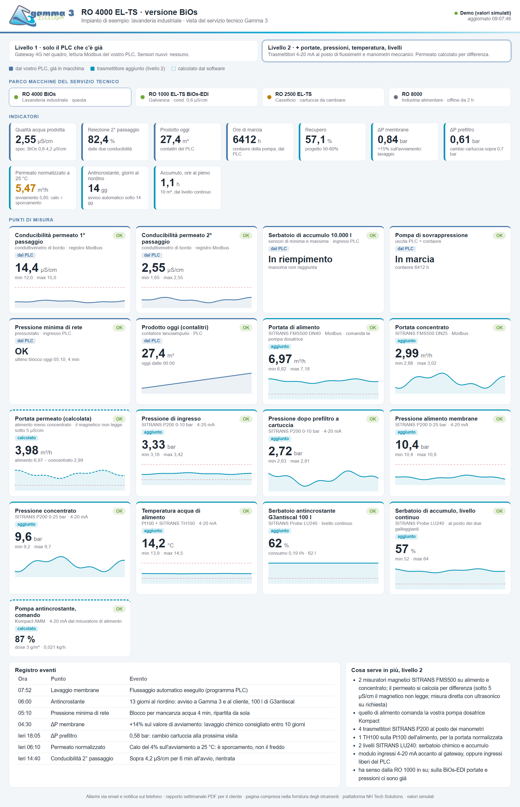
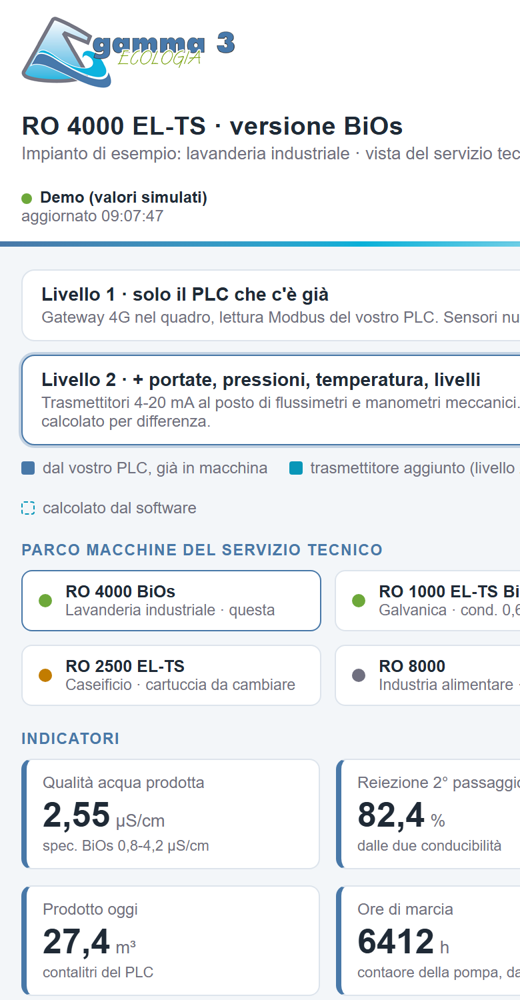

| Versione | Cosa c'è a bordo oggi | Livello 1 · solo PLC | Livello 2 · trasmettitori |
|---|---|---|---|
| Base singolo passaggio | PLC con conducibilità prodotta, pressostato di minima, galleggianti serbatoio; flussimetri e manometri meccanici | gateway + SIM conducibilità, stati, ore, lavaggi, contalitri se c'è | kit completo 2 FMS500, 4 P200, TH100, 2 LU240; permeato per differenza |
| BiOs doppio passaggio | come Base, più conducibilità del 1° stadio e blocco di massima pressione; serbatoio intermedio | gateway + SIM le due conducibilità danno la reiezione del 2° passaggio | kit completo come Base; il 2° passaggio sotto 5 µS/cm non si misura con un magnetico (ultrasonico su richiesta) |
| BiOs-EDI bi-osmosi + cEDI | misuratori magnetici e trasduttori di pressione già collegati al PLC, pH del 1° stadio | gateway + SIM portate e pressioni si leggono già dal PLC: quasi tutto il livello 2 senza sensori nuovi | fornitura gli stessi magnetici e trasduttori in SITRANS, se vi conviene; TH100 e LU240 come opzione |
Tutte le macchine installate in una pagina, con soglie, utenti e storico. È la schermata delle pagine precedenti.

Resta quello di oggi, con il programma del PLC invariato. Il gateway legge, non scrive.
Solo la sua macchina, in sola lettura, con le notifiche. Nessuna app da installare: si apre dal browser.
